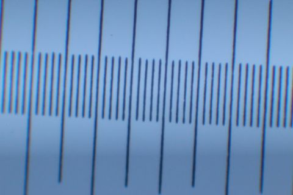
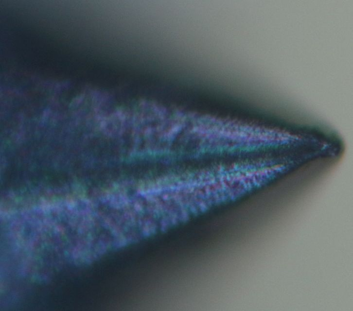
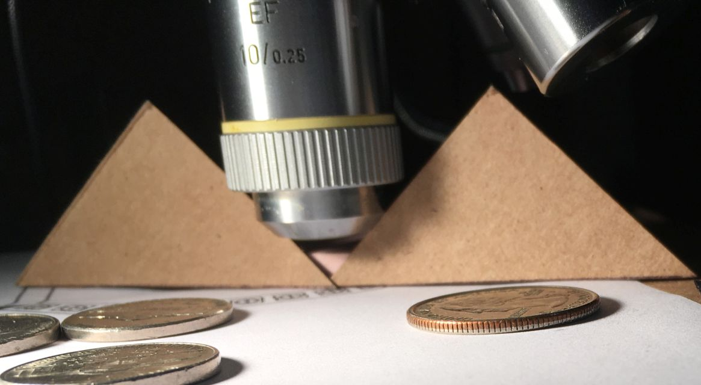
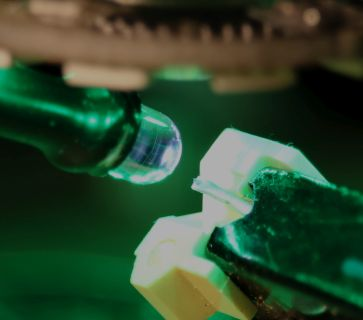

Leitz finite 10x objective
-
A set of infinity objectives acquired years ago
also included a LEITZ WETZLAR 160/- EF 10/0.25
with 6.8 mm working distance (Laborlux K-D brochure page 14)
An RMS to T2 adapter enables macrophotography experiments.
Attached by hot glue,
RGB LED ring light mounting sleeve
failed during an extended session;
illumination temporarily reverted to white LED gooseneck
while epoxy cures.
- Practically, focusing a 10X objective by bellows
is much harder than by headless microscope.
Increased working distance
impacts numerical aperture,
but trials with bellows did not indicate any drastic effects,
with results compromised by difficulty focusing.
Eliminating all optics but objective should increase contrast,
but illumination differences and reduction in magnification confound comparison.
Here is a 1:1 crop of that stylus tip from an APS-C Canon sensor:

With camera body attached to a microscope, zoomed live view eases focusing,
but using objectives with bellows mostly demonstrated
limitations of conventional photography focus rails.
Resolution in this setup may also be constrained by sensor pixel density..
10X cannot fill an APS-C sensor with stylus:

This image was easier than using bellows,
except positioning LED for similar illumination:
|
|
Leitz color calibration on Series 10 with 7D
| white | blue | green | red |
| 74 | 65-8 | 72-5 | 67-70 |
Field of view: full frame 20X and 3.3X relay vs APS-C 10X
These are both 480*320 downsamples of full sensor images in the same microscope arm
with similar ring illumination:
| Leitz 10X 160mm and APS-C sensor | MEIJI 20X infinity, A.O. tube lens, 3.3X relay and 35mm sensor |
| 
|
Zooming the Leitz image
(right-click, "Open image in new tab", then [Ctrl]&[+] keys)
reveals that only about the center third is nearly focused;
this objective wants to be used with a 3.3X relay lens..
.. or perhaps 2x telextender.
Leitz 10X with NFK 3.3X
Repurposing available bellows, EF and T2 extension tubes with adapters
yields nearly 140mm parfocal distance for Leitz objective to NFK 3.3X relay lens
and 150mm projection distance to APS-C sensor.
NFK 3.3X is perched at the T2-EF adapter:
This stack is decidedly less than rigid
and really needs electronic shutter and remote release.
|
Field of view is usefully improved: (downsampled but uncropped)
|
blue 109 |
"white" 107 |

red 97 |
green 101 |
|
Chromatic focus differences for Leitz 10X with Olympus NFK 3.3X photo relay |
M55E stylus is better illuminated by a 40mm RGB LED halo on Leitz objective.
Additional 3.3X magnification allows use of blue LED for better optical resolution
followed by about 4x downsampling after converting blue to grayscale and adjusting dynamic range:

The stylus in the above image was rotated less than 45 degrees from horizontal.
This image has the stylus rotated somewhat more than 45 degrees,
illuminated by white (R+G+B)LED halo, no contrast adjustment:

Leitz objective has working distance and nose profile for 45 degree illumination.



Calibration shot with Leitz EF and 3.3X photo relay to APS-C sensor:

Much of the camera's sensor is wasted on out-of-focus objective.
Reducing blue images from 5472x3648 to 800x533
imperceptibly impacts detail: |
|
...while green images noticeably lose detail below 1280x853:
relatively sparse blue pixels in Canon sensor's Bayer matrix
evidently matter more than shorter light wavelengths at this lower magnification.
Introducing a (white) "helper" LED:


Rotating M55E stylus from 45 to 60 degrees improves illumination

...because of twisted stylus:
Pickering D400 stylus shows more typical 45 degree illumination:
and allows tweaking phono stylus alignment to servo axis.
White card for grayscale reference of blue illumination.
Stylus rotation by servo tester improves illumination angle.


{kind=link}